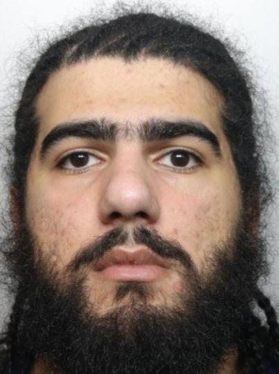

Crime - 2024-01-23: Iranian Rapist Caught with Phones in Prison
England, UK
Crime Kasra Esmaelie HMP Isle of Wight England Deportation
Iranian rapist Kasra Esmaelie was caught with two mobile phones in his prison cell at HMP Isle of Wight, leading to additional charges.
Source#Crime #Kasra Esmaelie #HMP Isle of Wight #England #Deportation
Thumbnail

People Involved
| Name | G | Nationality | Role | Age | Date of Birth | Offence(s) | Sentence |
|---|---|---|---|---|---|---|---|
| Kasra Esmaelie | 🌐 | Iranian | Offender | 28.0 | Unknown |
Rape and Kidnap
Indecent Child Image Offences
|
13 years
5 years
|

Iranian rapist Kasra Esmaelie was caught with hidden mobile phones in his cell at HMP Isle of Wight twice within two days. The offender, serving a 13-year sentence for a 2021 kidnap and rape in Slough, pleaded guilty to possessing phones in prison. He also faces a five-year sentence for indecent child image offenses. Magistrates imposed two eight-week sentences alongside his existing terms, with deportation to Iran pending after his release in 2031. The victim endured a horrendous attack after being injected with heroin and raped in a public car park. Like, subscribe and share if you find this information useful.